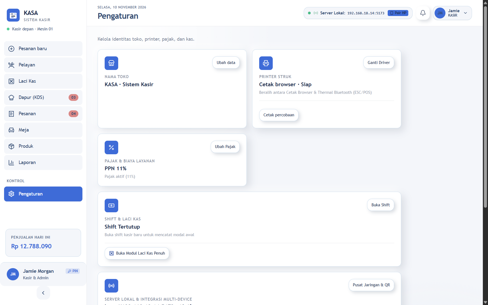
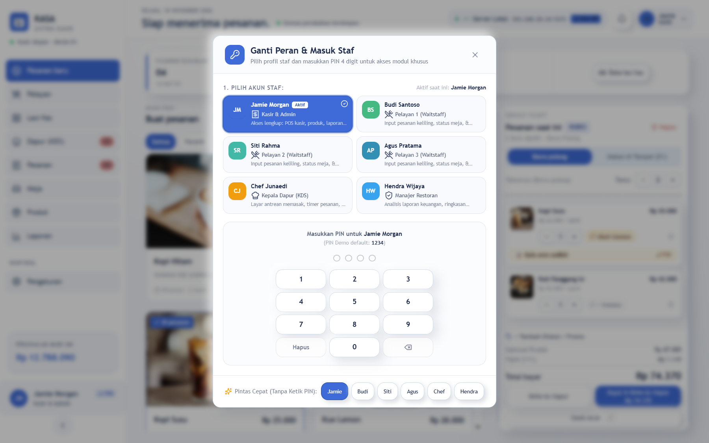
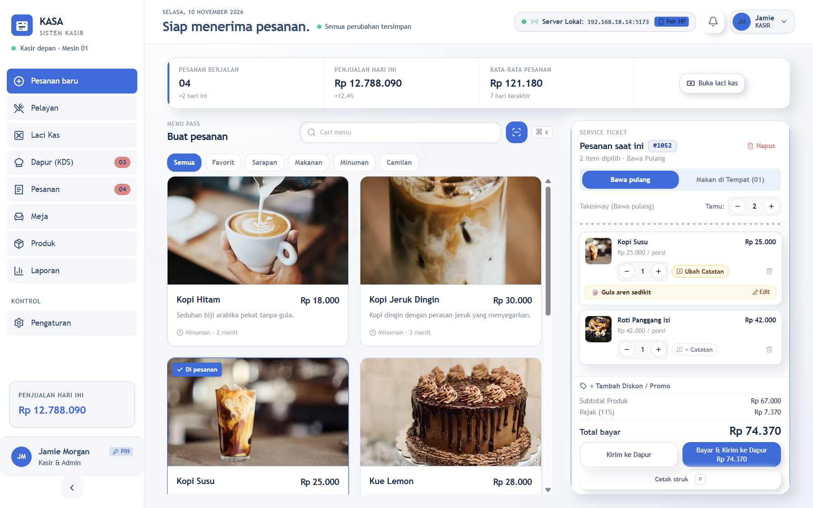
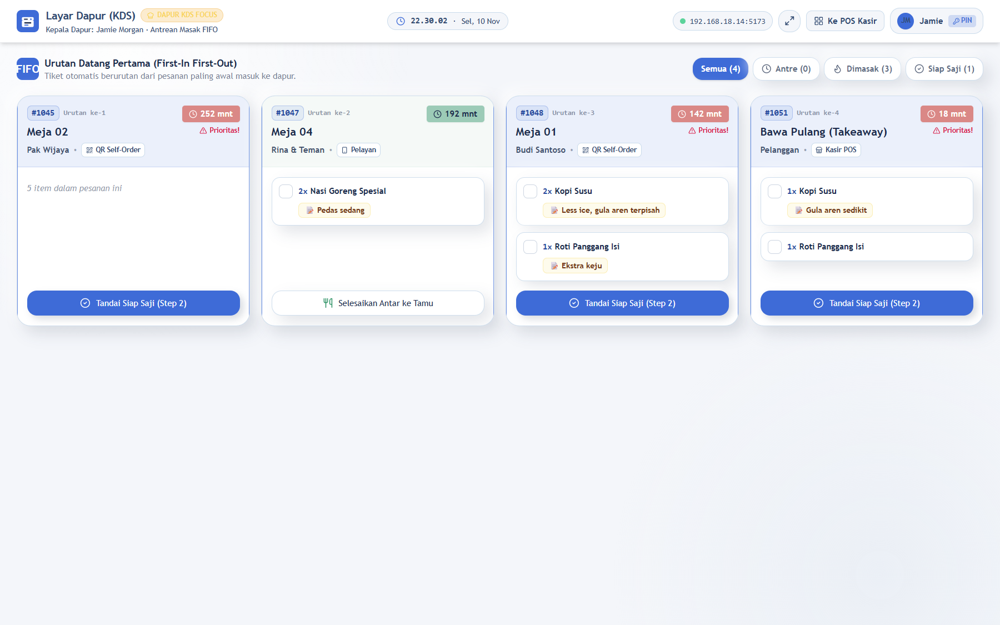
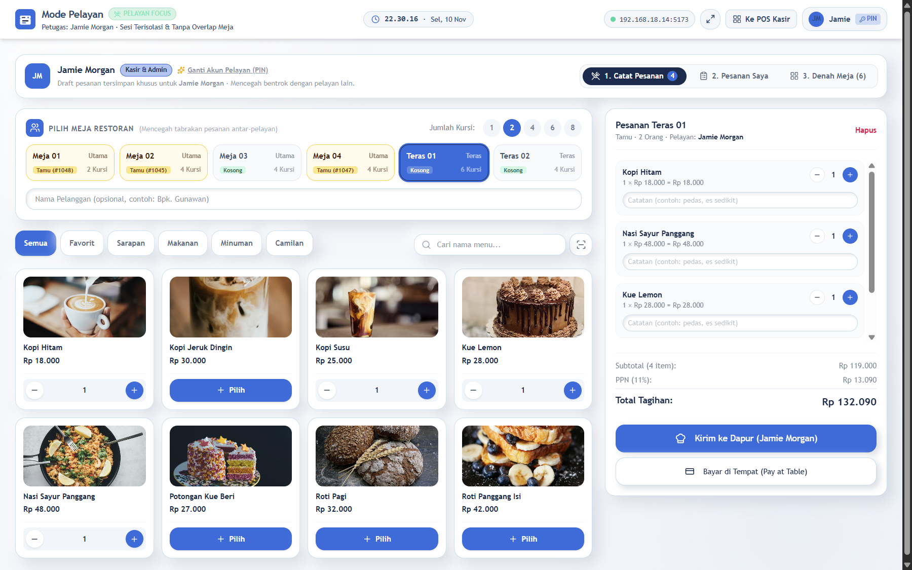
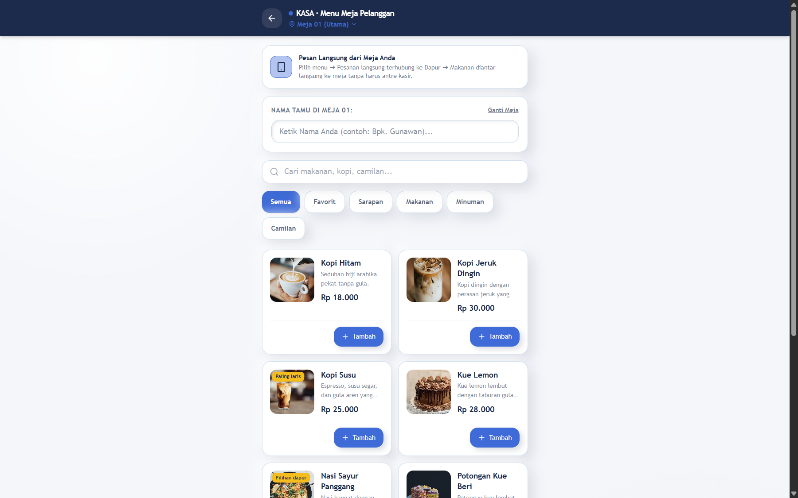
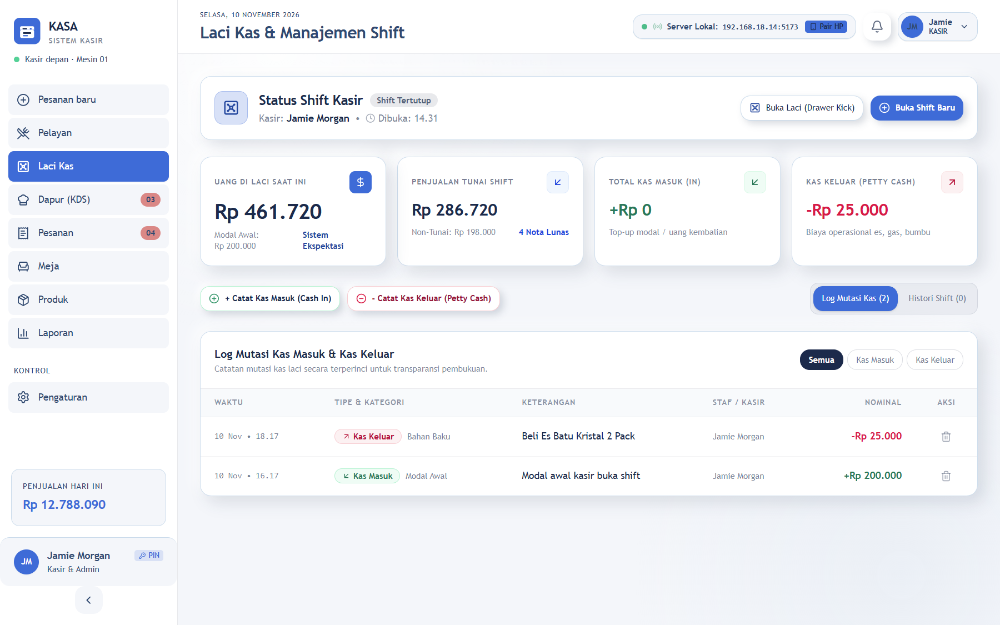
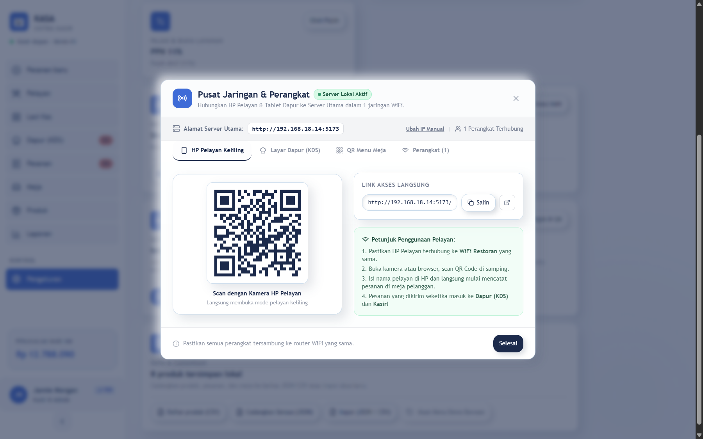
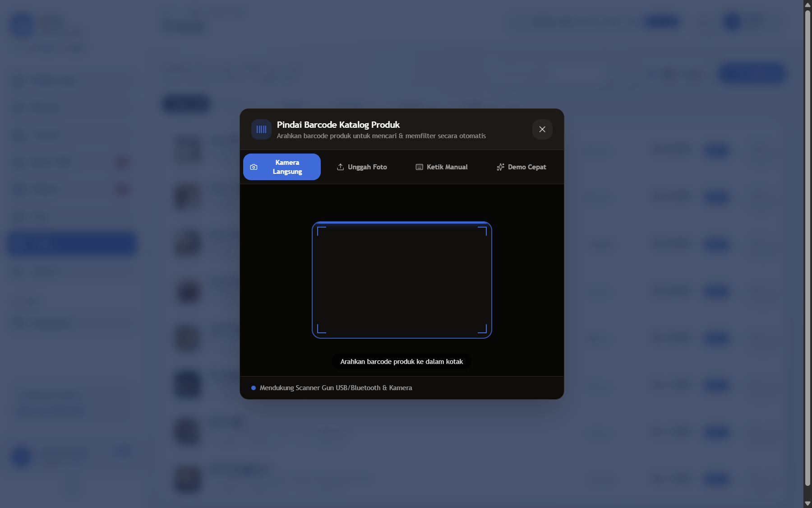

Panduan penggunaan KASA POS untuk kasir, pelayan, dapur, manajer, dan pemilik usaha kuliner.
Dokumen ini menjelaskan cara kerja aplikasi, bukan janji fitur di luar implementasi saat ini. Gunakan bagian checklist untuk menyiapkan operasional harian.
KASA mendukung POS kasir, Kitchen Display System, self-order QR, mode pelayan, laci kas, katalog produk, laporan, pairing jaringan lokal, scanner, dan printer thermal.
01 / Ringkasan
KASA untuk operasional restoran
KASA adalah aplikasi kasir restoran berbasis web dengan penyimpanan lokal di browser. Aplikasi menghubungkan transaksi kasir, pesanan pelayan, pesanan QR meja, dan antrean dapur dalam satu sistem operasional.
POS
Kasir
Mencari menu, mengatur item, menerapkan diskon, menghitung pajak, menerima pembayaran, dan mencetak struk.
KDS
Dapur
Menampilkan tiket pesanan berdasarkan urutan masuk, timer, asal pesanan, catatan item, dan status masak.
QR
Self-order
Pelanggan membuka menu meja dari QR, mengirim pesanan, memilih bayar langsung atau bayar nanti, lalu memantau status masak.
KDS dengan antrean FIFO, timer, asal pesanan, dan tombol perubahan status.
Pelayan membutuhkan perangkat bergerak.
Mode pelayan responsif dengan keranjang terisolasi per staf dan perlindungan table lock.
Pemilik perlu kontrol kas dan laporan.
Laci kas, buka/tutup shift, rekonsiliasi kas, laporan penjualan, dan ekspor data.
Batasan penting: data utama tersimpan di browser melalui IndexedDB. Siapkan prosedur backup/export dan gunakan perangkat kasir yang stabil. Fitur Bluetooth dan kamera bergantung pada dukungan browser serta izin perangkat.
02 / Setup
Menyiapkan KASA sebelum operasional
1
Siapkan perangkat kasir. Gunakan Chrome, Edge, atau browser Chromium modern. Jalankan aplikasi pada komputer kasir dengan koneksi jaringan lokal yang stabil.
2
Pasang aplikasi. cd client, kemudian npm install dan npm run dev. Untuk deployment, jalankan npm run build dan sajikan folder client/dist.
3
Atur identitas operasional. Periksa produk, kategori, meja, pajak, service charge, serta staf yang akan menggunakan sistem.
4
Hubungkan perangkat. Gunakan Pusat Jaringan untuk melihat alamat server lokal dan QR pairing. Buka route pelayan pada HP dan route dapur pada tablet yang berada di WiFi yang sama.

Halaman Pengaturan menjadi titik awal untuk identitas toko, printer, pajak, shift, dan koneksi jaringan.
Route utama
/ POS kasir
/pelayan mode pelayan
/dapur KDS
/order/meja-01 self-order pelanggan
Checklist pembukaan
Shift sudah dibuka.
Printer atau metode cetak sudah diuji.
Tablet KDS sudah membuka route dapur.
QR meja masih dapat dipindai.
Produk dan harga hari ini benar.
03 / Akses
Peran staf dan batas akses
Gunakan Quick Switch untuk berpindah staf. Setiap staf memakai PIN empat digit dan RouteGuard membatasi modul sesuai perannya.
Peran
Penggunaan utama
Route
Jamie Morgan Kasir & Admin
POS, produk, meja, laci kas, laporan, pengaturan, pelayan, dan dapur.
Semua modul
Budi, Siti, Agus Pelayan
Mencatat pesanan meja, melihat pesanan aktif, dan menggunakan denah meja.
/pelayan
Chef Junaedi Kepala Dapur
Melihat dan memperbarui status tiket masak.
/dapur
Hendra Wijaya Manajer
Laporan, ringkasan pesanan, laci kas, pengaturan, dan meja.
Modul manajerial

Quick Switch menampilkan staf aktif, peran, dan input PIN pada tampilan terbaru.
Praktik yang disarankan: jangan memakai PIN bersama. Setiap staf sebaiknya berpindah ke profilnya sendiri supaya asal pesanan, histori, dan tanggung jawab operasional tetap jelas.
04 / POS
Alur kasir dari menu hingga pembayaran

POS versi terbaru menempatkan katalog menu, pencarian, kategori, dan service ticket dalam satu layar.
Membuat pesanan
Pilih kategori atau cari menu.
Klik produk untuk memasukkan item.
Atur jumlah dan catatan item.
Pilih bawa pulang atau makan di tempat.
Pilih meja dan jumlah tamu bila diperlukan.
Memeriksa total
Periksa subtotal produk.
Tambahkan diskon atau promo.
Pastikan pajak dan service charge sesuai kebijakan restoran.
Periksa total bayar sebelum pembayaran.
Keputusan pembayaran
Aksi
Kapan digunakan
Hasil
Bayar & Kirim ke Dapur
Pesanan dibayar sekarang.
Pembayaran dicatat sebagai paid dan tiket otomatis masuk KDS.
Kirim ke Dapur
Pesanan perlu dimasak sebelum pembayaran, atau pelanggan membayar nanti.
Tiket masuk KDS dengan status pembayaran unpaid.
Selesaikan pembayaran
Memilih tunai, kartu/QR, atau QRIS di modal pembayaran.
Modal ditutup, kembalian dihitung jika tunai, dan transaksi dicatat.
Kontrol kasir: sebelum menyelesaikan pembayaran tunai, masukkan nominal uang yang diterima. KASA menghitung kembalian dan menampilkannya pada notifikasi transaksi.
05 / Status order
Pembayaran dan dapur memakai status terpisah
Pemisahan ini mencegah kesalahan umum: pesanan sudah dibayar tetapi tiketnya masih harus diproses dapur.
Lifecycle
Urutan
Makna
Pembayaran
unpaid → paid → refunded
Apakah transaksi sudah dibayar.
Dapur
draft → queued → preparing → ready → served
Sejauh mana pesanan diproses dan diserahkan.
06 / KDS
Menjalankan antrean dapur

KDS versi terbaru menampilkan antrean tiket, asal pesanan, waktu tunggu, item, catatan, dan aksi berikutnya.
Urutan kerja
Pastikan tiket baru terlihat pada filter Antre.
Tekan Mulai Masak ketika dapur mulai mengerjakan tiket.
Periksa catatan item sebelum penyajian.
Tekan Siap Disajikan ketika semua item selesai.
Selesaikan antar ke tamu setelah pesanan diserahkan.
Kontrol antrean
KDS mengurutkan tiket berdasarkan waktu masuk.
Tiket lama dapat memiliki penanda prioritas.
Filter memisahkan semua, antre, dimasak, dan siap saji.
Asal tiket membantu dapur membedakan kasir, pelayan, dan self-order.
Tiket dari kasir, pelayan, dan self-order tampil dalam antrean KDS yang sama.
07 / Pelayan dan self-order
Pesanan meja dari perangkat bergerak

Mode pelayan versi terbaru untuk mencatat pesanan di area restoran.
Alur pelayan
Masuk dengan profil pelayan.
Pilih meja dari denah atau daftar.
Tambahkan menu dan catatan.
Kirim pesanan ke dapur.
Pantau pesanan aktif pada tab Pesanan Saya.

Menu pelanggan versi terbaru dari QR meja.
Alur pelanggan
Pindai QR meja.
Pilih menu dan catatan.
Pilih bayar langsung atau bayar nanti.
Kirim pesanan.
Pantau status diterima, dimasak, dan siap diantar.
Table lock: ketika meja sedang aktif ditangani pelayan lain, sistem memberi peringatan untuk mengurangi risiko dua staf mengubah pesanan yang sama.
08 / Kas dan katalog
Kontrol operasional pemilik dan manajer
Laci kas
Buka shift dengan nama kasir dan modal awal.
Catat cash in dan cash out bila diperlukan.
Periksa penerimaan tunai sistem.
Hitung fisik uang kertas dan koin.
Tutup shift dan simpan selisih kas.
Produk dan kategori
Kelola nama, harga, kategori, barcode, dan gambar produk.
Gunakan pencarian menu pada POS.
Atur kategori agar kasir tidak perlu menelusuri katalog panjang.
Uji perubahan harga pada satu transaksi sebelum jam ramai.

Laci kas versi terbaru menyatukan buka shift, penerimaan tunai, dan rekonsiliasi.
Praktik penutupan shift
Pastikan tiket yang masih berjalan sudah ditindaklanjuti.
Bandingkan total tunai sistem dengan uang fisik.
Catat selisih dan penyebabnya pada catatan shift.
Simpan atau ekspor data sesuai prosedur pembukuan restoran.
09 / Perangkat
Scanner, printer, jaringan, dan QR meja
Scanner
KASA menyediakan scanner kamera berbasis ZXing, input manual, unggah foto, demo cepat, serta dukungan scanner HID USB atau Bluetooth.
Browser memerlukan izin kamera. Scanner HID harus dipasangkan ke sistem operasi sebelum digunakan.
Printer thermal
Driver ESC/POS mendukung printer thermal 58 mm dan 80 mm melalui Web Bluetooth. Dialog cetak browser menjadi fallback untuk printer USB atau LAN.
Uji koneksi dan cetak struk sebelum operasional.
Jaringan lokal
POS, HP pelayan, dan tablet dapur dapat menggunakan alamat IP lokal yang sama. Pusat Jaringan menampilkan alamat dan QR pairing.
Perangkat harus berada di jaringan WiFi yang sama dengan komputer kasir.
QR meja
Setiap meja dapat memiliki QR menu sendiri. Cetak QR setelah meja dibuat dan uji dengan kamera pelanggan sebelum ditempel.
Pastikan URL QR mengarah ke meja yang benar.

Pusat jaringan versi terbaru untuk pairing HP pelayan dan tablet dapur.

Scanner barcode versi terbaru dengan mode kamera, unggah foto, input manual, dan demo.
10 / Troubleshooting
Masalah umum dan tindakan cepat
Masalah
Pemeriksaan pertama
Tindakan
Tiket tidak terlihat di KDS.
Periksa apakah pesanan sudah dikirim ke dapur dan tablet membuka /dapur.
Refresh halaman KDS, cek WiFi lokal, lalu kirim ulang hanya jika tiket memang belum ada.
Pembayaran tunai tidak dapat diselesaikan.
Periksa nominal uang diterima.
Masukkan nominal sama atau lebih besar dari total. KASA menghitung kembalian otomatis.
Kamera scanner tidak aktif.
Periksa izin kamera browser dan kamera yang dipakai aplikasi lain.
Izinkan kamera, tutup aplikasi kamera lain, lalu buka modal scanner lagi.
Printer tidak mencetak.
Periksa Bluetooth, pairing, kertas, dan ukuran printer.
Uji dialog print browser sebagai fallback. Jangan menandai transaksi selesai hanya berdasarkan status printer.
HP pelayan tidak tersambung.
Periksa IP lokal dan jaringan WiFi.
Buka URL pairing dari Pusat Jaringan dan pastikan firewall jaringan tidak memblokir port aplikasi.
Data terlihat berbeda antar perangkat.
Periksa koneksi LAN dan waktu sinkronisasi.
Refresh kedua perangkat. Pastikan keduanya memakai server lokal yang sama.
Jangan menghapus data browser saat shift berjalan. IndexedDB menyimpan data lokal aplikasi. Lakukan backup atau export sesuai prosedur sebelum membersihkan browser atau mengganti perangkat.
11 / Checklist pemilik
Checklist sebelum serah terima
Operasional
Produk, harga, kategori, pajak, dan service charge sudah diperiksa.
Meja dan QR meja sudah diuji.
Profil staf dan PIN sudah dibagikan secara aman.
Alur bayar sekarang dan bayar nanti sudah dipahami.
Tablet KDS sudah terpasang di area dapur.
Perangkat
Komputer kasir terhubung ke jaringan lokal.
Printer thermal sudah mencetak struk uji.
Scanner sudah membaca barcode uji.
HP pelayan dapat membuka route pelayan.
Browser sudah mengizinkan kamera dan Bluetooth bila diperlukan.